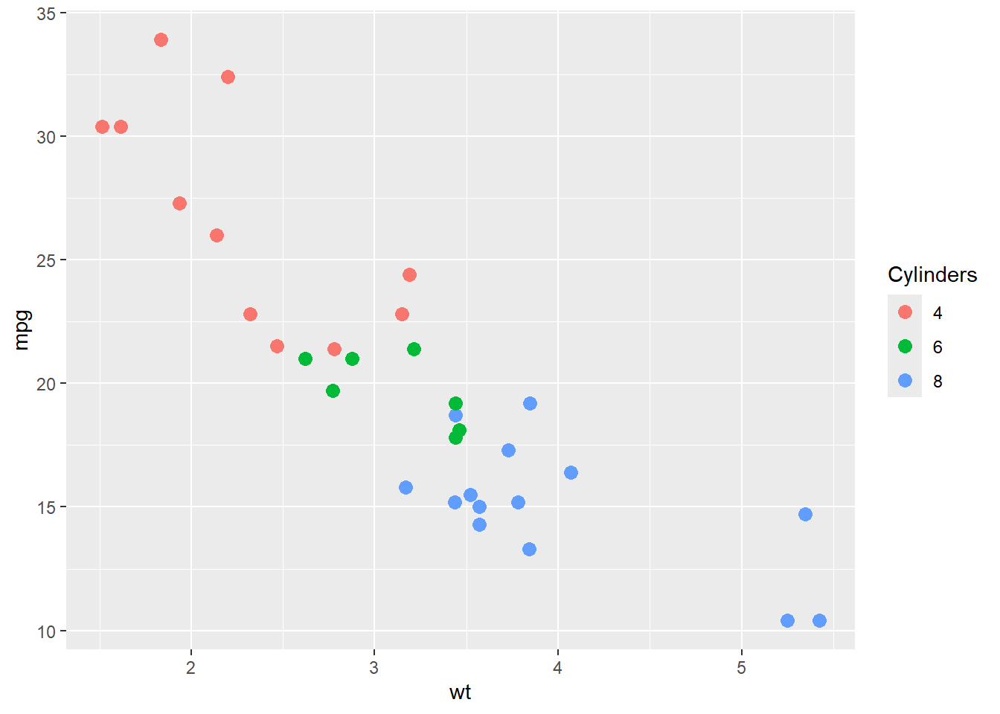
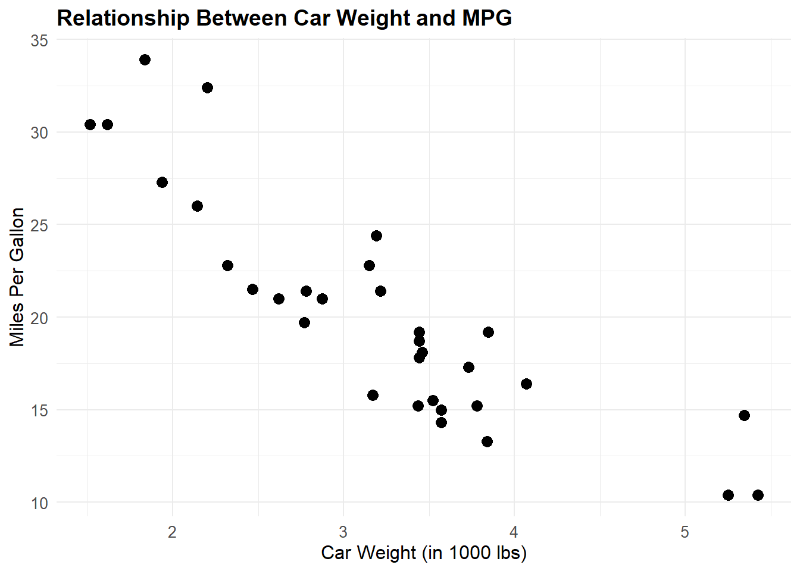
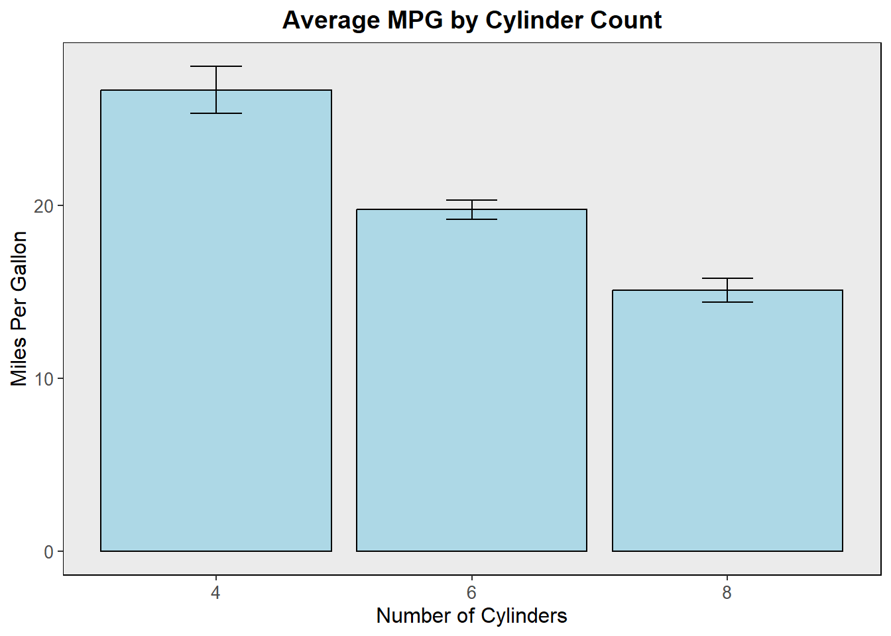

Chapter 7 ggplot2 and Graphing Data in APA Formatting
7.1 Chapter Overview: Introduction to Data Visualization
7.1.1 Importance of Graphing in Research
Graphing, or data visualization, is a fundamental aspect of psychological research. It serves as a powerful tool to summarize complex datasets and convey findings in a clear, concise, and visually appealing manner. In the realm of psychological science, where researchers often deal with large amounts of data, effective visualization is crucial for several reasons:
- Enhancing Understanding:
- Graphs help to make sense of data by transforming raw numbers into visual representations, making patterns, trends, and relationships easier to identify and understand. Whether its tracking changes over time, comparing groups, or highlighting correlations, a well-crafted graph can quickly convey the essence of the data.
- Communicating Results:
- In research, its not just about discovering new insights; its also about communicating those findings to otherswhether thats peers, policymakers, or the public. Graphs are a universal language that transcends technical jargon, allowing researchers to effectively communicate their results to a broad audience. A clear and accurate graph can often tell a story more compellingly than a table of numbers ever could.
- Supporting Evidence:
- Graphs are often used to support the conclusions drawn from statistical analyses. They provide a visual confirmation of the trends and patterns identified in the data, helping to bolster the credibility of the research. In many cases, journals and conferences require visual representations of data to accompany statistical results, making graphing an essential skill for researchers.
7.1.2 Common Types of Graphs in Psychological Research
Psychological research frequently relies on several key types of graphs to present data. Each type serves a different purpose and is selected based on the nature of the data and the research question. Here are the most common types:
- Bar Graphs:
- Purpose: Bar graphs are used to compare the values of different groups or categories. They are particularly useful when you want to show the differences between discrete categories, such as the mean scores of different groups in an experiment.
- Example: A bar graph might be used to display the average test scores of students in different teaching methods.
- Line Graphs:
- Purpose: Line graphs are ideal for showing trends over time or the relationship between two continuous variables. They are often used when the data points are related in a sequential order, such as time-series data.
- Example: A line graph could be used to track changes in anxiety levels over several weeks of a treatment program.
- Scatter Plots:
- Purpose: Scatter plots are used to examine the relationship between two continuous variables. Each point on the graph represents an observation, allowing researchers to see patterns, correlations, or outliers.
- Example: A scatter plot might be used to explore the relationship between hours studied and exam scores among students.
- Histograms:
- Purpose: Histograms are used to show the distribution of a single continuous variable. They help to visualize the frequency of data points within specified ranges, providing insights into the shape of the data distribution.
- Example: A histogram could be used to display the distribution of reaction times in a cognitive experiment.
- Box Plots:
- Purpose: Box plots (or box-and-whisker plots) are used to summarize the distribution of a dataset, showing the median, quartiles, and potential outliers. They are particularly useful for comparing distributions across different groups.
- Example: A box plot might be used to compare the distribution of stress scores across different age groups.
In this chapter, we will explore the basics of creating these types of graphs using the powerful ggplot2 package in R. We will start with the fundamentals, ensuring you have a solid understanding of how to construct and customize these visualizations. Later, we will focus on how to adjust these graphs to adhere to APA formatting guidelines, which is essential for presenting your research in a professional and standardized manner.
7.2 Getting Started with ggplot2
7.2.1 What is ggplot2?
ggplot2 is a powerful and flexible data visualization package in R that allows you to create a wide variety of graphs, from simple scatter plots to complex multi-layered visualizations. Unlike the base R plotting system, which can be somewhat rigid and limited in its capabilities, ggplot2 offers a much more intuitive and layered approach to creating graphs.
Why Use ggplot2? - Customizability: ggplot2 allows you to fine-tune every aspect of your graph, from the colors and shapes of points to the labels and themes. This means you can create visualizations that are not only accurate but also aesthetically pleasing and tailored to your specific needs. - Layered Approach: ggplot2 uses a concept called the grammar of graphics, which makes it easy to build up a plot in layers. This approach allows you to start with a basic plot and gradually add more complexity, such as colors, labels, or statistical summaries, in a structured way. - Consistency: The syntax of ggplot2 is consistent across different types of plots. Once you learn the basic structure, you can easily apply it to a wide range of graphs, making the learning curve less steep. - Integration with R: ggplot2 integrates seamlessly with Rs data structures, such as data frames and tibbles, allowing you to directly plot data from your analyses.
Comparison with Base R Plotting Functions
- Base R: In base R, plots are created using functions like plot(), hist(), or barplot(). While these functions are straightforward, they can be limited in terms of customization. For example, adding multiple layers or modifying specific elements (like changing the color of just one bar in a bar plot) can be cumbersome.
- ggplot2: In contrast, ggplot2s layered approach makes it easy to add or modify elements. For instance, you can start with a simple scatter plot and then layer on a regression line, customize the colors, and add labels, all with a few lines of code.
Heres a simple comparison:
- Base R Scatter Plot:
- ggplot2 Scatter Plot:

In the ggplot2 version, you immediately see the use of aesthetics (aes) to map the variables, and the plot is constructed in layers. This layered approach is central to the power and flexibility of ggplot2.
7.2.1.1 Installing and Loading ggplot2
Before you can start using ggplot2, you need to install the package and load it into your R session.
- Installing ggplot2:
- If you havent installed ggplot2 yet, you can do so using the
install.packages()function. This downloads the package from CRAN (The Comprehensive R Archive Network) and installs it on your computer.
- If you havent installed ggplot2 yet, you can do so using the
- Once installed, you only need to install ggplot2 once. After installation, you can load it into your R session whenever you need to use it.
- Loading ggplot2:
- To use ggplot2 in your R session, load it with the
library()function:
- To use ggplot2 in your R session, load it with the
- Loading the package makes all its functions available for use. Youll know ggplot2 is loaded correctly if you can start typing ggplot2 functions (like
ggplot()) without receiving an error.
- Integration with the R Ecosystem:
- ggplot2 is part of the larger tidyverse, a collection of R packages designed for data science. The tidyverse includes packages like dplyr for data manipulation and tidyr for data tidying, which integrate seamlessly with ggplot2. This means you can easily prepare your data with dplyr and then visualize it with ggplot2 in a smooth, cohesive workflow.
7.2.2 Understanding the Grammar of Graphics
One of the most powerful concepts behind ggplot2 is the Grammar of Graphics, a systematic way of describing and building plots.
- Aesthetics (
aes):- Aesthetics are the visual properties of your plot, such as the position of points, colors, shapes, and sizes. In ggplot2, you map your data to these aesthetics using the
aes()function. For example:
- Aesthetics are the visual properties of your plot, such as the position of points, colors, shapes, and sizes. In ggplot2, you map your data to these aesthetics using the
- Here, the x-axis is mapped to
wt(weight), and the y-axis is mapped tompg(miles per gallon). This mapping is fundamental to all ggplot2 plots.
- Layers:
- ggplot2 builds plots in layers. The first layer typically includes the data and aesthetic mappings, and additional layers can include geometric objects (geoms), statistical transformations, and more. Each layer is added to the plot using the
+operator. - For example, to add points to a scatter plot, you use the
geom_point()function:
- ggplot2 builds plots in layers. The first layer typically includes the data and aesthetic mappings, and additional layers can include geometric objects (geoms), statistical transformations, and more. Each layer is added to the plot using the

- Geoms:
- Geoms are the geometric objects that represent the data in your plot. Common geoms include:
geom_point(): For scatter plots.geom_bar(): For bar charts.geom_line(): For line graphs.
- Each geom can be customized by mapping aesthetics or adding specific arguments.
- Geoms are the geometric objects that represent the data in your plot. Common geoms include:
- Scales:
- Scales control how data values are mapped to aesthetic properties, such as the axes or colors. For example, you can adjust the scales of your axes or use different color scales to represent data:
- This example sets the x-axis to range from 0 to 6.
- Facets:
- Faceting is a way to split your data into multiple plots based on a categorical variable. This is particularly useful when you want to compare different groups side by side. For example, you can create small multiples by faceting by the number of cylinders in the
mtcarsdataset:
- Faceting is a way to split your data into multiple plots based on a categorical variable. This is particularly useful when you want to compare different groups side by side. For example, you can create small multiples by faceting by the number of cylinders in the

- This code will produce separate scatter plots for cars with different numbers of cylinders.
7.2.3 Basic Components of a ggplot2 Plot
To create a plot in ggplot2, you combine the following components:
- Data:
- The first step is to prepare your data. Ensure that your data is in a format that ggplot2 can work with, typically a data frame or tibble. The variables you want to plot should be in columns.
- Aesthetics (
aes):- Aesthetics define how your data is visually represented. This involves mapping your data columns to visual properties like the x and y positions, colors, or sizes.
- Geoms:
- Geoms are the shapes or objects that appear on your plot, representing your data points. The choice of geom depends on the type of plot you want to create (e.g., points for scatter plots, bars for bar charts).
- Scales:
- Scales adjust how data is mapped to aesthetics. You can customize the scales of your axes, colors, or sizes to improve the readability and appearance of your plot.
- Facets:
- Faceting allows you to create multiple plots based on a categorical variable, helping to compare different subsets of your data within the same graphic.
7.2.4 Creating Your First Plot
Lets walk through creating a simple scatter plot using ggplot2.
- Step 1: Prepare Your Data
- Well use the built-in
mtcarsdataset in R, which contains data on different car models, including their weight (wt) and miles per gallon (mpg).
- Well use the built-in
- Step 2: Initialize the ggplot Object
- The first step in creating a plot is to initialize the ggplot object and specify the data and aesthetics:
- Step 3: Add a Geom Layer
- Next, add a geom to represent your data. For a scatter plot, we use
geom_point():
- Next, add a geom to represent your data. For a scatter plot, we use
- Step 4: Customize the Plot
- You can now customize the plot by adding labels, adjusting scales, or applying a theme:
p <- p + labs(title = "Scatter Plot of Weight vs. MPG",
x = "Weight (1000 lbs)",
y = "Miles Per Gallon") +
theme_minimal()- Step 5: Display the Plot
- Finally, display the plot by calling the object:
Example Output:
The resulting plot will display a scatter plot showing the relationship between the weight of cars and their fuel efficiency. You can see how easy it is to create and customize a plot with ggplot2, even for someone with no prior graphing experience.
7.3 Customizing Plots with ggplot2
Once youve created a basic plot in ggplot2, the next step is to customize it to make sure it communicates your message effectively. Customization not only enhances the visual appeal of your plots but also ensures that the information is presented clearly. This section will guide you through the process of adding titles and labels, modifying themes, adjusting colors and styles, adding annotations, and saving your plots.
7.3.1 Adding Titles and Labels
Why Titles and Labels Matter: Titles and labels are essential for understanding the context of a graph. A well-titled graph with clearly labeled axes makes it easy for the viewer to interpret the data correctly.
- Adding a Title:
- You can add a title to your plot using the
labs()function, where you specify thetitleargument. - Example:
- You can add a title to your plot using the
ggplot(mtcars, aes(x = wt, y = mpg)) +
geom_point() +
labs(title = "Relationship Between Weight and MPG") - This adds a title at the top of the plot.
- This adds a title at the top of the plot.
- Adding Axis Labels:
- Axis labels help the viewer understand what the axes represent. You can add labels for the x and y axes using the
labs()function. - Example:
- Axis labels help the viewer understand what the axes represent. You can add labels for the x and y axes using the
ggplot(mtcars, aes(x = wt, y = mpg)) +
geom_point() +
labs(title = "Relationship Between Weight and MPG",
x = "Weight (1000 lbs)",
y = "Miles Per Gallon")
- Here, x and y specify the labels for the x and y axes, respectively.
- Customizing Legends:
- Legends are used when you have multiple groups or categories in your plot. You can customize the legend title and labels within the
labs()function. - Example:
- Legends are used when you have multiple groups or categories in your plot. You can customize the legend title and labels within the
ggplot(mtcars, aes(x = wt, y = mpg, color = factor(cyl))) +
geom_point() +
labs(title = "MPG by Car Weight and Cylinders",
x = "Weight (1000 lbs)",
y = "Miles Per Gallon",
color = "Number of Cylinders")
- In this example, the color argument within labs() changes the legend title to Number of Cylinders.
- Positioning Titles and Labels:
- You can adjust the position of titles and labels using the
theme()function. For instance, to center the plot title:
- You can adjust the position of titles and labels using the
ggplot(mtcars, aes(x = wt, y = mpg)) +
geom_point() +
labs(title = "Relationship Between Weight and MPG",
x = "Weight (1000 lbs)",
y = "Miles Per Gallon") +
theme(plot.title = element_text(hjust = 0.5))
- The hjust parameter (horizontal justification) controls the alignment of the title (0 = left, 0.5 = center, 1 = right).
7.3.2 Modifying Themes
What Are Themes?: Themes control the overall look and feel of your plot, including background color, grid lines, text size, and font. ggplot2 comes with several built-in themes, and you can also create your own.
- Using Pre-Built Themes:
- ggplot2 provides several pre-built themes that you can apply with a single line of code. Some popular themes include:
theme_minimal(): A clean, simple theme with no background color.theme_classic(): A traditional theme with a white background and black grid lines.theme_light(): A light, airy theme with soft grid lines.
- Example:
- ggplot2 provides several pre-built themes that you can apply with a single line of code. Some popular themes include:
- This applies the theme_minimal() to the plot, resulting in a modern, minimalistic appearance.
- Customizing Themes:
- You can modify specific elements of a theme using the
theme()function. For example, you might want to change the text size or remove grid lines: - Example:
- You can modify specific elements of a theme using the
ggplot(mtcars, aes(x = wt, y = mpg)) +
geom_point() +
theme_minimal() +
theme(text = element_text(size = 12),
panel.grid.major = element_blank(),
panel.grid.minor = element_blank())- In this example, the text size is increased, and both major and minor grid lines are removed.
- Combining Themes:
- You can layer multiple theme modifications to achieve the desired look. For instance, you might combine
theme_classic()with additional customizations: - Example:
- You can layer multiple theme modifications to achieve the desired look. For instance, you might combine
ggplot(mtcars, aes(x = wt, y = mpg)) +
geom_point() +
theme_classic() +
theme(axis.text = element_text(size = 10, color = "blue"),
axis.title = element_text(size = 14, face = "bold"))- This combines the classic theme with custom axis text and title sizes, and changes the axis text color to blue.
7.3.3 Adjusting Colors and Styles
Why Adjust Colors and Styles?: Colors and styles are critical for distinguishing different groups or categories within your plot. Proper use of colors can also make your plots more engaging and easier to interpret.
- Changing Point and Line Colors:
- You can change the color of points or lines using the
coloraesthetic. This is particularly useful when you want to differentiate between groups. - Example:
- You can change the color of points or lines using the
ggplot(mtcars, aes(x = wt, y = mpg, color = factor(cyl))) +
geom_point(size = 3) +
labs(color = "Cylinders") - In this example, points are colored based on the number of cylinders, making it easy to see how different cylinder groups perform in terms of MPG.
- Customizing Line Types and Point Shapes:
- Line types (e.g., solid, dashed) and point shapes (e.g., circles, triangles) can also be customized using the
linetypeandshapeaesthetics. - Example:
- Line types (e.g., solid, dashed) and point shapes (e.g., circles, triangles) can also be customized using the
ggplot(mtcars, aes(x = wt, y = mpg, shape = factor(cyl))) +
geom_point(size = 3) +
scale_shape_manual(values = c(16, 17, 18)) +
labs(shape = "Cylinders")- This code assigns different shapes to the points based on the number of cylinders, which can be helpful for differentiating groups.
- Using Custom Color Palettes:
- You can apply custom color palettes using the
scale_color_manual()function or choose from predefined palettes withscale_color_brewer(). - Example:
- You can apply custom color palettes using the
ggplot(mtcars, aes(x = wt, y = mpg, color = factor(cyl))) +
geom_point(size = 3) +
scale_color_brewer(palette = "Set1") +
labs(color = "Cylinders")
- The Set1 palette is from the ColorBrewer library, which provides colorblind-friendly palettes.
7.3.4 Adding Annotations
Why Add Annotations?: Annotations help to highlight specific data points or add explanatory text to your plot, making it easier to convey the key message.
- Adding Text Annotations:
- You can add text annotations using the
annotate()function orgeom_text()to place text at specific coordinates on the plot. - Example:
- You can add text annotations using the
ggplot(mtcars, aes(x = wt, y = mpg)) +
geom_point() +
annotate("text", x = 5, y = 30, label = "High MPG", color = "red")- This adds a text label High MPG at the specified coordinates.
- Adding Lines and Rectangles:
- You can add horizontal or vertical lines using
geom_hline()orgeom_vline(), and shaded rectangles usinggeom_rect(). - Example:
- You can add horizontal or vertical lines using
ggplot(mtcars, aes(x = wt, y = mpg)) +
geom_point() +
geom_hline(yintercept = 20, linetype = "dashed", color = "blue") +
geom_vline(xintercept = 4, linetype = "dashed", color = "blue")- This adds dashed lines at y = 20 and x = 4, helping to highlight specific areas of the plot.
- Adding Arrows and Segments:
- Use
geom_segment()to add arrows or line segments to draw attention to specific parts of the plot. - Example:
- Use
ggplot(mtcars, aes(x = wt, y = mpg)) +
geom_point() +
geom_segment(aes(x = 4, y = 15, xend = 5, yend = 20),
arrow = arrow(length = unit(0.3, "cm")),
color = "green")## Warning in geom_segment(aes(x = 4, y = 15, xend = 5, yend = 20), arrow = arrow(length = unit(0.3, : All aesthetics have length 1, but the data has 32 rows.
## Please consider using `annotate()` or provide this layer with data
## containing a single row.- This draws an arrow from (4, 15) to (5, 20), pointing out a specific trend or relationship in the data.
7.4 Saving and Exporting Plots
Why Save Plots?: Saving your plots allows you to include them in reports, presentations, or publications. You can save plots in various formats, such as PNG, PDF, or JPEG, depending on your needs.
Certainly! Lets continue with the section on saving and exporting plots in ggplot2.
7.4.1 Saving and Exporting Plots
Why Save Plots?: Saving your plots allows you to include them in reports, presentations, or publications. You can save plots in various formats, such as PNG, PDF, or JPEG, depending on your needs. ggplot2 makes it easy to save your plots with high resolution and in different sizes.
- Saving Plots as Image Files:
- The
ggsave()function is the most common way to save plots in ggplot2. It automatically saves the last plot you created, but you can also specify a plot to save by passing it as an argument. - Example: Saving as a PNG file
- The
ggplot(mtcars, aes(x = wt, y = mpg)) +
geom_point() +
labs(title = "Relationship Between Weight and MPG")- In this example, the plot is saved as a PNG file named weight_vs_mpg.png. The
widthandheightparameters control the size of the image, anddpi(dots per inch) controls the resolution (300 dpi is standard for high-quality images).
- Saving Plots as PDF Files:
- Saving plots as PDF files is useful for including them in documents or for printing. PDF files maintain high quality and are scalable.
- Example:
ggplot(mtcars, aes(x = wt, y = mpg)) +
geom_point() +
labs(title = "Relationship Between Weight and MPG")
- This saves the plot as a PDF file, which can be opened in any PDF viewer or included in documents like research papers.
- Customizing the Save Function:
- You can customize the save process further by specifying the device (e.g., PNG, PDF, JPEG) or by adjusting the size and resolution.
- Example: Saving as JPEG with custom dimensions
- This saves the plot as a JPEG file with custom dimensions.
- Saving Plots with Custom Names:
- You can also save plots with custom names that include variables or dynamic content.
- Example:
- This code saves the plot with a custom name stored in the
plot_namevariable.
- Saving Multiple Plots:
- If you have created multiple plots and want to save them all, you can assign each plot to a variable and use
ggsave()on each. - Example:
- If you have created multiple plots and want to save them all, you can assign each plot to a variable and use
plot1 <- ggplot(mtcars, aes(x = wt, y = mpg)) + geom_point()
plot2 <- ggplot(mtcars, aes(x = hp, y = mpg)) + geom_point()
ggsave("plot1.png", plot = plot1, width = 6, height = 4, dpi = 300)
ggsave("plot2.png", plot = plot2, width = 6, height = 4, dpi = 300)- Exporting Plots from RStudio:
- In RStudio, you can also export plots directly from the Plot pane. After creating a plot:
- Click the Export button above the plot.
- Choose Save as Image or Save as PDF and configure the file name, format, size, and resolution.
- Click Save to export the plot.
- In RStudio, you can also export plots directly from the Plot pane. After creating a plot:
- Maintaining Plot Quality:
- When exporting plots, always ensure that the resolution (dpi) is high enough for your intended use. For web or presentation use, 72-150 dpi may be sufficient. For print or publication, 300 dpi is the standard.
By mastering these steps, youll be able to save and share your ggplot2 visualizations in various formats, ensuring they maintain their quality and clarity for any audience.
7.5 Introduction to APA Formatting
In psychological research, clear and consistent communication of data is crucial. The American Psychological Association (APA) has established a set of guidelines for formatting research papers, including how to present graphs and figures. Adhering to these standards ensures that your research is presented professionally and is easily understood by others in the field.
7.5.1 What is APA Formatting?
APA Formatting refers to the standardized style guidelines established by the American Psychological Association, which are widely used in psychology and other social sciences. These guidelines cover everything from how to structure a research paper to how to format citations, tables, and figures, including graphs.
Overview of APA Style Guidelines for Graphing:
- Consistency: APA style promotes consistency across all elements of a research paper, including graphs. This ensures that all figures are presented in a uniform manner, making it easier for readers to interpret the data.
- Clarity: APA emphasizes clarity in data presentation, meaning that graphs should be easy to read and understand. This involves careful selection of graph types, appropriate scaling, and clear labeling.
- Precision: APA guidelines encourage precise presentation of data, ensuring that graphs accurately represent the underlying data without distortion or exaggeration.
- Professionalism: Adhering to APA standards helps present your research in a professional manner, which is particularly important for publication in academic journals and presentations at conferences.
Importance of Adhering to APA Standards in Psychological Research:
- Credibility: Following APA guidelines enhances the credibility of your research by demonstrating attention to detail and a commitment to professional standards.
- Ease of Communication: APA-compliant graphs are easier for other researchers to understand and interpret, facilitating better communication of your findings.
- Publication Requirements: Most psychology journals require submissions to adhere to APA style, including the formatting of graphs and figures. Ensuring that your graphs meet these standards can streamline the publication process.
7.5.2 Key Elements of APA-Formatted Graphs
When formatting graphs according to APA style, there are several key elements to consider:
- Titles and Axis Labels:
- Title: Every graph should have a clear, descriptive title that concisely conveys what the graph is about. The title should be placed above the graph, not on it.
- Axis Labels: Both the x-axis and y-axis must be labeled with the name of the variable and the units of measurement, if applicable. Axis labels should be straightforward and easily understood.
- Legends:
- Placement: Legends should be placed within the plot area, often in a corner where they do not obscure the data. If possible, position the legend outside the plot area for a cleaner appearance.
- Content: Legends should clearly explain any colors, shapes, or lines used in the graph. For example, if different colors represent different groups, the legend should indicate which color corresponds to each group.
- Font Size and Style:
- Font Size: APA guidelines recommend using a font size that is readable when the graph is printed at the final size. Typically, 10 to 12-point font is appropriate for axis labels and titles.
- Font Style: Use a sans-serif font like Arial or Helvetica for readability. Ensure that all text is clear and consistent throughout the graph.
- Line Thickness:
- Lines: APA recommends using a consistent line thickness that is neither too thick nor too thin. Lines should be easily distinguishable but not overpowering.
- Error Bars: If your graph includes error bars, they should be clearly visible and easy to interpret, typically using a medium line thickness.
- Color and Contrast:
- Colors: Use colors that are distinct and provide sufficient contrast. Avoid using too many colors, and ensure that all colors are distinguishable, even for those with color vision deficiencies.
- Greyscale: If your graph will be printed in black and white, ensure that different elements are still distinguishable by using varying shades of grey or different line types (e.g., solid, dashed).
- Grid Lines:
- Visibility: Grid lines should be kept to a minimum and should not detract from the data. APA guidelines suggest using light grey grid lines or none at all, depending on the graph.
- Placement: If grid lines are used, they should be subtle and only included where necessary to aid in interpreting the data.
7.5.3 Example: Comparing a Standard ggplot2 Graph with an APA-Compliant Graph
Lets compare a basic ggplot2 graph with an APA-compliant version to highlight the key differences.
Standard ggplot2 Graph:
library(ggplot2)
# Basic scatter plot
ggplot(mtcars, aes(x = wt, y = mpg)) +
geom_point() +
labs(title = "Scatter Plot of Weight vs. MPG",
x = "Weight (1000 lbs)",
y = "Miles Per Gallon")This graph includes a title, axis labels, and points representing data. However, it doesnt fully adhere to APA formatting guidelines.
APA-Compliant Graph:
ggplot(mtcars, aes(x = wt, y = mpg)) +
geom_point(size = 3, color = "black") + # Black points for better contrast
geom_smooth(method = "lm", se = FALSE, color = "black", linetype = "dashed") + # Adding a trend line
labs(title = "Relationship Between Car Weight and Fuel Efficiency",
x = "Car Weight (in 1000 lbs)",
y = "Fuel Efficiency (MPG)") +
theme_minimal() + # Apply a clean theme
theme(plot.title = element_text(hjust = 0.5, size = 14, face = "bold"),
axis.title = element_text(size = 12),
axis.text = element_text(size = 10),
legend.position = "none") # Removing legend for simplicity## `geom_smooth()` using formula = 'y ~ x'Key Changes in the APA-Compliant Graph:
- Title: The title is more descriptive and centered above the graph.
- Axis Labels: The axis labels are slightly larger and more descriptive, including units of measurement.
- Font Size and Style: The font size is adjusted for readability, and a sans-serif font is used.
- Color and Line Thickness: The points are black for better contrast, and a dashed line is added to represent the trend, which is typical in APA formatting.
- Legend: The legend is removed in this example, as its unnecessary for a single variable plot, reducing clutter.
By following these guidelines, your graphs will not only meet APA standards but also effectively communicate your data, making your research more accessible and impactful.
7.6 Creating APA-Formatted Graphs with ggplot2
Creating graphs that adhere to APA formatting guidelines in ggplot2 involves a series of modifications to the default plots. This section will guide you through the process of adjusting your ggplot2 plots to meet APA standards, customizing themes for compliance, and creating common APA-formatted graphs. Well also cover how to add annotations and legends that align with APA guidelines.
7.6.1 Modifying ggplot2 Plots to Meet APA Standards
To modify a ggplot2 plot to meet APA standards, youll need to adjust various elements such as font sizes, line thickness, and overall layout. Below is a step-by-step guide on how to do this.
- Adjusting Font Sizes:
- APA guidelines recommend using a legible font size for titles, axis labels, and text. Typically, youll want to use a font size of around 10-12 points for axis labels and slightly larger for titles.
- Example:
ggplot(mtcars, aes(x = wt, y = mpg)) +
geom_point(size = 3) +
labs(title = "Relationship Between Car Weight and MPG",
x = "Car Weight (in 1000 lbs)",
y = "Miles Per Gallon") +
theme_minimal() +
theme(
plot.title = element_text(size = 14, face = "bold"),
axis.title = element_text(size = 12),
axis.text = element_text(size = 10)
)
- Modifying Line Thickness:
- Line thickness should be consistent and not too heavy or light. APA guidelines generally prefer moderate line thickness for clarity.
- Example:
ggplot(mtcars, aes(x = wt, y = mpg)) +
geom_point(size = 3) +
geom_smooth(method = "lm", se = FALSE, color = "black", linetype = "solid", size = 0.7) +
labs(title = "Relationship Between Car Weight and MPG",
x = "Car Weight (in 1000 lbs)",
y = "Miles Per Gallon") +
theme_minimal() +
theme(
plot.title = element_text(size = 14, face = "bold"),
axis.title = element_text(size = 12),
axis.text = element_text(size = 10),
panel.grid.major = element_blank(), # Remove major grid lines
panel.grid.minor = element_blank(), # Remove minor grid lines
panel.border = element_rect(color = "black", size = 0.5, fill = NA) # Ensure the panel background is not filled
)- Other Formatting Details:
- Additional APA adjustments include removing unnecessary grid lines, ensuring that legends are placed appropriately, and making sure that colors provide sufficient contrast.
ggplot(mtcars, aes(x = wt, y = mpg)) +
geom_point(size = 3, color = "black") +
geom_smooth(method = "lm", se = FALSE, color = "black", linetype = "dashed", size = 0.7) +
labs(title = "Relationship Between Car Weight and MPG",
x = "Car Weight (in 1000 lbs)",
y = "Miles Per Gallon") +
theme_minimal() +
theme(
plot.title = element_text(size = 14, face = "bold"),
axis.title = element_text(size = 12),
axis.text = element_text(size = 10),
panel.grid.major = element_blank(), # Remove major grid lines
panel.grid.minor = element_blank(), # Remove minor grid lines
panel.border = element_rect(color = "black", size = 0.5, fill = NA), # Ensure the panel background is not filled
legend.position = "top"
)7.6.2 Using Theme Options for APA Compliance
To streamline the process of creating APA-compliant graphs, ggplot2 offers theme options that can be customized to fit APA guidelines. By modifying these themes, you can ensure that your graphs meet APA standards consistently.
- Customizing the Theme:
- The
theme()function in ggplot2 allows you to customize various elements of your plot, including text size, font style, grid lines, and panel borders. - Example:
- The
custom_theme <- theme(
plot.title = element_text(hjust = 0.5, size = 14, face = "bold"),
axis.title = element_text(size = 12),
axis.text = element_text(size = 10),
legend.position = "top",
panel.grid.major = element_blank(), # Remove major grid lines
panel.grid.minor = element_blank(), # Remove minor grid lines
panel.border = element_rect(color = "black", size = 0.5, fill = NA) # Ensure the panel background is not filled
)
ggplot(mtcars, aes(x = wt, y = mpg)) +
geom_point(size = 3, color = "black") +
geom_smooth(method = "lm", se = FALSE, color = "black", linetype = "dashed", size = 0.7) +
labs(title = "Relationship Between Car Weight and MPG",
x = "Car Weight (in 1000 lbs)",
y = "Miles Per Gallon") +
custom_theme## `geom_smooth()` using formula = 'y ~ x'- Example: Applying the Custom Theme for APA Compliance:
- The example above creates a custom theme that can be reused across multiple plots to ensure consistency with APA formatting.
- This theme sets the font size and style for titles, axis labels, and axis text, removes unnecessary grid lines, and adjusts the legend position and panel borders.
7.6.3 Common APA-Formatted Graphs
Creating different types of graphs that adhere to APA formatting requires specific adjustments based on the graph type. Below are examples for bar graphs, line graphs, scatter plots, and box plots.
- Bar Graphs:
- Bar graphs are commonly used in APA-style research to compare categories or groups. Error bars are often included to represent variability.
- Example:
ggplot(mtcars, aes(x = factor(cyl), y = mpg)) +
geom_bar(stat = "summary", fun = "mean", fill = "lightblue", color = "black") +
geom_errorbar(stat = "summary", fun.data = "mean_se", width = 0.2) +
labs(title = "Average MPG by Cylinder Count",
x = "Number of Cylinders",
y = "Miles Per Gallon") +
custom_theme
- Line Graphs:
- Line graphs are used to show trends over time or across conditions. When multiple groups are involved, different line types or colors are used.
- Example:
ggplot(mtcars, aes(x = wt, y = mpg, color = factor(cyl))) +
geom_line() +
labs(title = "MPG vs. Weight by Cylinder Count",
x = "Weight (1000 lbs)",
y = "Miles Per Gallon",
color = "Cylinders") +
custom_theme- Scatter Plots:
- Scatter plots display relationships between two continuous variables. Trend lines (such as linear regression lines) are often added in APA-compliant scatter plots.
- Example:
ggplot(mtcars, aes(x = wt, y = mpg)) +
geom_point(size = 3, color = "black") +
geom_smooth(method = "lm", se = FALSE, color = "black", linetype = "dashed", size = 0.7) +
labs(title = "Scatter Plot of Weight and MPG",
x = "Weight (1000 lbs)",
y = "Miles Per Gallon") +
custom_theme## `geom_smooth()` using formula = 'y ~ x'- Box Plots:
- Box plots are used to summarize the distribution of a dataset by displaying the median, quartiles, and potential outliers.
- Example:
7.6.4 Adding Annotations and APA Legends
Annotations and legends are essential for providing additional context and clarity in APA-compliant graphs.
- Adding APA-Compliant Annotations:
- Annotations can be added to highlight specific data points or trends in the graph. In APA formatting, these annotations should be clear and unobtrusive.
- Example:
ggplot(mtcars, aes(x = wt, y = mpg)) +
geom_point(size = 3, color = "black") +
geom_smooth(method = "lm", se = FALSE, color = "black", linetype = "dashed", size = 0.7) +
annotate("text", x = 4.5, y = 25, label = "Trend Line", hjust = 0, size = 4, color = "black") +
labs(title = "Scatter Plot of Weight and MPG",
x = "Weight (1000 lbs)",
y = "Miles Per Gallon") +
custom_theme## `geom_smooth()` using formula = 'y ~ x'- Positioning the Legend According to APA Guidelines:
- APA guidelines suggest placing legends outside the plot area to avoid cluttering the graph. The legend should be easily readable and positioned to enhance the graphs clarity.
- Example:
ggplot(mtcars, aes(x = wt, y = mpg, color = factor(cyl))) +
geom_point(size = 3) +
geom_smooth(method = "lm
", se = FALSE, linetype = "dashed", size = 0.7) +
labs(title = "MPG vs. Weight by Cylinder Count",
x = "Weight (1000 lbs)",
y = "Miles Per Gallon",
color = "Cylinders") +
custom_theme +
theme(
legend.position = "right", # Position the legend to the right of the plot
legend.title = element_text(size = 12, face = "bold"),
legend.text = element_text(size = 10)
)## `geom_smooth()` using formula = 'y ~ x'
By following these guidelines, you can create graphs that not only meet APA standards but also effectively communicate your research findings. The combination of precise formatting, appropriate annotations, and well-placed legends ensures that your graphs are both professional and informative.
7.7 Practical Examples and Exercises
In this section, well walk through creating APA-formatted graphs using ggplot2, with a focus on bar graphs and line graphs. Additionally, well provide an exercise where you can apply what youve learned to create an APA-compliant scatter plot.
7.7.1 Example 1: Creating an APA-Formatted Bar Graph
Bar graphs are commonly used in psychological research to compare the mean values of different groups or categories. Adding error bars to a bar graph is a standard practice, as it provides a visual indication of the variability within the data.
Step 1: Load the Data
- For this example, well use the built-in mtcars dataset, focusing on comparing the average miles per gallon (MPG) across different cylinder groups.
Step 2: Create a Basic Bar Graph - We start by creating a basic bar graph that shows the mean MPG for each cylinder group.
library(ggplot2)
ggplot(mtcars, aes(x = factor(cyl), y = mpg)) +
geom_bar(stat = "summary", fun = "mean", fill = "lightblue", color = "black") +
labs(title = "Average MPG by Cylinder Count",
x = "Number of Cylinders",
y = "Miles Per Gallon")Step 3: Add Error Bars - To make the graph more informative, add error bars that represent the standard error of the mean.
ggplot(mtcars, aes(x = factor(cyl), y = mpg)) +
geom_bar(stat = "summary", fun = "mean", fill = "lightblue", color = "black") +
geom_errorbar(stat = "summary", fun.data = "mean_se", width = 0.2, color = "black") +
labs(title = "Average MPG by Cylinder Count",
x = "Number of Cylinders",
y = "Miles Per Gallon")Step 4: Apply APA Formatting - Now, lets apply APA formatting by adjusting the font sizes, removing unnecessary grid lines, and ensuring the graph is clear and professional.
ggplot(mtcars, aes(x = factor(cyl), y = mpg)) +
geom_bar(stat = "summary", fun = "mean", fill = "lightblue", color = "black") +
geom_errorbar(stat = "summary", fun.data = "mean_se", width = 0.2, color = "black") +
labs(title = "Average MPG by Cylinder Count",
x = "Number of Cylinders",
y = "Miles Per Gallon") +
theme_minimal() +
theme(
plot.title = element_text(size = 14, face = "bold", hjust = 0.5),
axis.title = element_text(size = 12),
axis.text = element_text(size = 10),
panel.grid.major = element_blank(),
panel.grid.minor = element_blank(),
panel.border = element_rect(color = "black", size = 0.5, fill = NA)
)This code will produce an APA-compliant bar graph with error bars, clear labeling, and a professional appearance.
7.7.2 Example 2: Creating an APA-Formatted Line Graph
Line graphs are useful for showing trends over time or across conditions, particularly when comparing multiple groups.
Step 1: Load the Data
- For this example, well continue using the mtcars dataset, focusing on comparing the MPG across different weights for cars with different cylinder counts.
Step 2: Create a Basic Line Graph - Well start by creating a line graph that shows the relationship between car weight and MPG, with separate lines for each cylinder group.
ggplot(mtcars, aes(x = wt, y = mpg, color = factor(cyl))) +
geom_line(size = 1) +
labs(title = "MPG vs. Weight by Cylinder Count",
x = "Weight (1000 lbs)",
y = "Miles Per Gallon",
color = "Cylinders")
Step 3: Customize the Graph - Customize the graph by modifying line types and ensuring that each line is distinct.
ggplot(mtcars, aes(x = wt, y = mpg, color = factor(cyl))) +
geom_line(size = 1, linetype = "solid") +
labs(title = "MPG vs. Weight by Cylinder Count",
x = "Weight (1000 lbs)",
y = "Miles Per Gallon",
color = "Cylinders")Step 4: Apply APA Formatting - Apply APA formatting to ensure that the graph meets professional standards.
ggplot(mtcars, aes(x = wt, y = mpg, color = factor(cyl))) +
geom_line(size = 1, linetype = "solid") +
labs(title = "MPG vs. Weight by Cylinder Count",
x = "Weight (1000 lbs)",
y = "Miles Per Gallon",
color = "Cylinders") +
theme_minimal() +
theme(
plot.title = element_text(size = 14, face = "bold", hjust = 0.5),
axis.title = element_text(size = 12),
axis.text = element_text(size = 10),
legend.title = element_text(size = 12),
legend.text = element_text(size = 10),
panel.grid.major = element_blank(),
panel.grid.minor = element_blank(),
panel.border = element_rect(color = "black", size = 0.5, fill = NA)
)This code will produce an APA-compliant line graph that clearly displays trends and comparisons across groups.
7.8 Tips and Best Practices
Creating APA-compliant graphs involves more than just following formatting rules; it requires careful consideration to ensure that your graphs effectively communicate your research findings. In this section, well cover common mistakes to avoid and best practices to follow when creating APA-formatted graphs.
7.8.1 Common Mistakes to Avoid in APA Graphing
- Using Inconsistent Font Sizes:
- Mistake: Inconsistent font sizes between titles, axis labels, and legend text can make a graph look unprofessional and difficult to read.
- How to Avoid: Stick to a consistent font size hierarchy: larger fonts for titles (14-16 points), medium fonts for axis labels (12-14 points), and slightly smaller fonts for axis and legend text (10-12 points).
- Overcomplicating the Graph with Too Many Colors or Patterns:
- Mistake: Using too many colors, patterns, or line types can make a graph cluttered and confusing, detracting from the clarity of the data.
- How to Avoid: Use a minimal number of colors and ensure they provide sufficient contrast. Stick to one or two line types or patterns to differentiate groups if necessary.
- Poor Placement of Legends:
- Mistake: Placing legends inside the plot area can obscure data points and make the graph harder to interpret.
- How to Avoid: Position legends outside the plot area or in an unobtrusive corner. Ensure the legend is easily readable and doesnt overlap with the data.
- Inadequate Labeling of Axes:
- Mistake: Failing to label axes clearly or omitting units of measurement can lead to misinterpretation of the data.
- How to Avoid: Always include descriptive axis labels with units of measurement where applicable. For example, instead of labeling an axis as Weight, label it as Weight (in 1000 lbs).
- Overuse of Grid Lines:
- Mistake: Including too many grid lines can create visual clutter, making it difficult for the reader to focus on the data.
- How to Avoid: Minimize the use of grid lines by removing minor grid lines and, if possible, major grid lines as well. APA style often recommends using clean, uncluttered graphs.
- Incorrect Aspect Ratios:
- Mistake: Distorted aspect ratios can misrepresent the data, making trends appear more or less significant than they actually are.
- How to Avoid: Use an aspect ratio that accurately represents the data. Avoid stretching or squishing the graph horizontally or vertically. The
coord_fixed()function in ggplot2 can be useful for maintaining aspect ratios.
- Failing to Consider Color Vision Deficiency:
- Mistake: Using color schemes that are indistinguishable for individuals with color vision deficiencies can make your graphs inaccessible.
- How to Avoid: Choose colorblind-friendly palettes, such as those provided by the
viridisorColorBrewerpackages. Ensure there is enough contrast between colors for all viewers.
- Ignoring APA Guidelines for Error Bars:
- Mistake: Omitting error bars or using inappropriate scales for error bars can lead to inaccurate interpretations of the data.
- How to Avoid: Include error bars when presenting means, and ensure they are proportional to the variability of the data. Use
geom_errorbar()in ggplot2 to add error bars that accurately reflect the datas variability.
7.8.2 Best Practices for Clear and Effective Graphs
- Prioritize Simplicity and Clarity:
- Tip: A simple, uncluttered graph is often more effective than a complex one. Focus on clearly conveying the key message without unnecessary distractions.
- Application: Remove any elements that dont contribute to understanding the data, such as unnecessary grid lines, excessive color, or overly detailed legends.
- Ensure Consistency Across Graphs:
- Tip: Consistency in formatting, color schemes, and labeling across multiple graphs within the same report or presentation helps create a cohesive and professional look.
- Application: Use a custom ggplot2 theme or create a template that you can apply to all your graphs to maintain consistency.
- Use Color and Line Types Thoughtfully:
- Tip: Use color and line types to highlight important aspects of the data, but avoid overloading the graph with too many different elements.
- Application: For example, use a solid line for the primary group and a dashed line for a secondary group. Limit the color palette to 2-3 distinct colors that are easy to distinguish.
- Highlight Key Data Points with Annotations:
- Tip: Annotations can help guide the viewers attention to important data points or trends within the graph.
- Application: Use
annotate()orgeom_text()in ggplot2 to add brief, clear annotations that highlight significant data points or trends without cluttering the graph.
- Optimize the Aspect Ratio:
- Tip: Ensure the aspect ratio of the graph is appropriate for the data being presented, so that the graph accurately reflects the relationships within the data.
- Application: Use the
coord_fixed()function in ggplot2 to maintain equal scaling on both axes if necessary, or adjust the aspect ratio to better display the data.
- Consider the Target Audience:
- Tip: Tailor the complexity and style of your graphs to the target audience. For a general audience, focus on clarity and simplicity, while for a more specialized audience, you might include more detailed information.
- Application: Adjust the level of detail, such as including or excluding error bars, depending on the audiences familiarity with the topic.
- Label Everything Clearly:
- Tip: Every element of your graph should be labeled clearly, so theres no ambiguity about what the graph is showing.
- Application: Use descriptive titles, clear axis labels, and informative legends. Avoid abbreviations unless they are widely understood by your audience.
- Test for Accessibility:
- Tip: Make sure your graph is accessible to all viewers, including those with color vision deficiencies.
- Application: Use colorblind-friendly palettes and ensure sufficient contrast between colors. Test your graph in greyscale to see if its still clear and interpretable.
By adhering to these best practices and avoiding common mistakes, you can create APA-compliant graphs that not only meet professional standards but also effectively communicate your research findings to a wide audience.
7.9 Chapter Summary
In this chapter, we explored the essential aspects of creating APA-compliant graphs using ggplot2 in R. We began with an introduction to the importance of data visualization in psychological research, emphasizing how clear and consistent graphing practices contribute to effective communication of research findings.
We then delved into the ggplot2 package, covering its foundational principles and the grammar of graphics that makes it a powerful tool for creating flexible and customizable visualizations. By understanding key components such as aesthetics, geoms, and scales, you learned how to build and refine plots that accurately represent your data.
Customizing your plots to meet APA standards was a major focus of this chapter. We discussed how to add and format titles, axis labels, and legends, ensuring that your graphs are not only informative but also professionally presented. We also explored the importance of using appropriate themes, adjusting colors and styles, and adding annotations to enhance the clarity and impact of your visualizations.
Through practical examples, we demonstrated the creation of APA-formatted bar graphs and line graphs, guiding you step-by-step in applying the principles of APA formatting to your plots. You also had the opportunity to practice creating an APA-compliant scatter plot, reinforcing the skills and concepts covered in the chapter.
Finally, we provided tips and best practices for avoiding common mistakes and ensuring that your graphs are clear, accurate, and effective in communicating your research findings. By following these guidelines, you can confidently create graphs that meet APA standards and enhance the presentation of your research.
With the knowledge gained in this chapter, you are now equipped to produce high-quality, APA-compliant visualizations that will support your research and help you communicate your findings effectively to your audience.
7.10 Practice Exercises
Now that youve learned the principles of creating APA-compliant graphs using ggplot2, its time to put your skills into practice. Below are three exercises designed to reinforce what youve learned and help you apply these concepts to real-world scenarios.
7.10.1 Exercise 1: Create an APA-Compliant Bar Graph
Objective: Create a bar graph that compares the mean values of a categorical variable, including error bars to represent variability.
Dataset: Use the mtcars dataset, focusing on the average miles per gallon (MPG) across different transmission types (am).
Instructions:
1. Load the mtcars dataset.
2. Create a bar graph that displays the average MPG for cars with automatic (0) and manual (1) transmissions.
3. Add error bars representing the standard error of the mean.
4. Apply APA formatting, ensuring that the title is descriptive, the axis labels are clear and include units, and the graph is free of unnecessary grid lines.
Hints:
- Use geom_bar(stat = "summary", fun = "mean") to create the bar graph.
- Use geom_errorbar(stat = "summary", fun.data = "mean_se") to add error bars.
- Apply a theme such as theme_minimal() and customize it for APA compliance.
7.10.2 Exercise 2: Modify a Basic ggplot2 Plot to Meet APA Standards
Objective: Take a basic ggplot2 plot and modify it to adhere to APA formatting guidelines.
Dataset: Use the mtcars dataset.
Instructions:
1. Create a basic scatter plot of wt (weight) versus mpg (miles per gallon) without any additional formatting.
2. Modify the plot to meet APA standards:
- Add a title and axis labels with appropriate font sizes.
- Remove unnecessary grid lines.
- Add a trend line (linear regression) to the plot.
- Ensure that the legend (if present) is positioned according to APA guidelines.
Hints:
- Use geom_point() to create the scatter plot.
- Use geom_smooth(method = "lm", se = FALSE) to add a trend line.
- Apply a theme such as theme_minimal() and adjust the theme() parameters for APA compliance.
7.10.3 Exercise 3: Create an APA-Compliant Line Graph and Save It as a High-Resolution Image
Objective: Create a line graph that compares trends across groups, and save the graph as a high-resolution image suitable for publication.
Dataset: Use the mtcars dataset.
Instructions:
1. Create a line graph showing the relationship between wt (weight) and mpg (miles per gallon), with separate lines for different numbers of cylinders (cyl).
2. Customize the line types and colors to ensure that each group is easily distinguishable.
3. Apply APA formatting, ensuring that the title is centered, the axis labels are clear, and the graph is free of unnecessary grid lines.
4. Save the graph as a high-resolution PNG file (300 dpi) with appropriate dimensions.
Hints:
- Use geom_line() to create the line graph.
- Use scale_color_manual() or a similar function to customize the colors.
- Apply a theme such as theme_minimal() and adjust the theme() parameters for APA compliance.
- Use the ggsave() function to save the graph with high resolution.